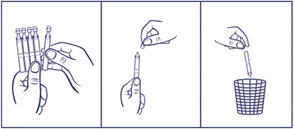
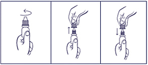

|
 |
| СОЛОСЕПТИН СЕНС (SOLOSEPTIN SENS) benzyldimethyl-myristoylamino-propylammonium капли глазные, ушные, назальные | ||||||||
|
Клинико-фармакологическая группа: Антисептик для местного применения Номер и дата регистрации: ЛП-007951 от 14.03.22 Код ATX: S01AX |
Владелец регистрационного удостоверения: зарегистрировано Представительство: | |||||||
Форма выпуска, состав и упаковка Капли глазные, ушные и назальные в виде бесцветной, прозрачной жидкости.
Вспомогательные вещества: натрия хлорид - 9 мг, вода д/и - до 1 мл. 0.5 мл - тюбики-капельницы из полиэтилена низкой плотности (10) - пачки картонные. | ||||||||
| ||||||||
Описание препарата основано на официально утвержденной инструкции по применению и утверждено компанией-производителем для издания 2023 г. | ||||||||
Фармакологическое действие |
Фармакокинетика |
Показания |
Режим дозирования |
Побочное действие |
Противопоказания |
Беременность и лактация |
Особые указания |
Передозировка |
Лекарственное взаимодействие |
Условия хранения и сроки годности |
Условия реализации
Фармакологическое действие
Основным действующим веществом препарата является антисептик бензилдиметил-миристоиламино-пропиламмоний, обладающий выраженным антимикробным действием в отношении грамположительных и грамотрицательных, аэробных и анаэробных бактерий в виде монокультур и микробных ассоциаций, включая госпитальные штаммы с полирезистентностью к антибиотикам. Препарат действует на хламидии, патогенные грибы, а также на вирусы герпеса, аденовирусы. Препарат более эффективен в отношении грамположительных бактерий, в т.ч. стафилококки, стрептококки. Оказывает противогрибковое действие на аскомицеты рода Aspergillus и рода Penicillium, дрожжевые (Rhodotorula tubra, Torulopsis glabrata) и дрожжевидные (Trichophyton rubrum, Trichophyton mentagrophytes, Trichophyton verrucosum, Trichophyton schoenleini, Trichophyton violaceum, Epidermophyton Kaufman-Wolf, E. floccosum, Microsporum gypseum, Microsporum canis), а также на другие патогенные грибы (например, Pityrosporum orbiculare (Malassezia furfur)) в виде монокультур и микробных ассоциаций, включая грибковую микрофлору с резистентностью к химиотерапевтическим препаратам. В основе действия бензилдиметил-миристоиламино-пропиламмония лежит прямое гидрофобное взаимодействие молекулы с липидами мембран микроорганизмов, приводящее к их фрагментации и разрушению. При этом часть молекулы бензилдиметил-миристоиламино-пропиламмония, погружаясь в гидрофобный участок мембраны, разрушает надмембранный слой, разрыхляет мембрану, повышает ее проницаемость для крупномолекулярных веществ, изменяет энзиматическую активность микробной клетки, ингибирует ферментные системы, что приводит к угнетению жизнедеятельности микроорганизмов и их цитолизу. Бензилдиметил-миристоиламино-пропиламмоний обладает высокой избирательностью действия в отношении микроорганизмов, т.к. практически не действует на мембраны клеток человека, что связано с иной структурой последних - значительно большей длиной липидных радикалов, резко ограничивающих возможность гидрофобного взаимодействия бензилдиметил-миристоиламино-пропиламмония с клетками. Под действием препарата снижается устойчивость бактерий и грибов к антибиотикам. Бензилдиметил-миристоиламино-пропиламмоний обладает противовоспалительным и иммуноадъювантным действием, усиливает местные защитные реакции, регенераторные процессы, активизирует механизмы неспецифической защиты вследствие модуляции клеточного и местного гуморального иммунного ответа. Фармакокинетика
Препарат оказывает местное действие. Данные о возможном проникновении в кровоток отсутствуют. Показания
Офтальмология:
Оториноларингология:
Режим дозирования
Офтальмология Местно. Взрослым с лечебной целью препарат закапывают в конъюнктивальный мешок по 1-2 капли 4-6 раз/сут до клинического выздоровления. С профилактической целью препарат закапывают за 2-3 суток до операции, а также в течение 10-15 дней после операции по 1-2 капли 3 раза/сут. При лечении ожогов глаз, после промывания глаза большим количеством воды, проводят частые инстилляции (каждые 5-10 минут) на протяжении 1-2 часов. Для дальнейшего лечения препарат применяют по 1-2 капли 4-6 раз/сут. В педиатрической практике для лечения бактериальных конъюнктивитов у детей препарат закапывают в конъюнктивальный мешок по 1 капле до 6 раз/сут в течение 7-10 дней. Для профилактики офтальмии у новорожденных сразу после рождения ребенку закапывают по 1 капле препарата в каждый глаз 2 раза с интервалом 2-3 минуты. Оториноларингология Местно. Взрослым при остром синусите/риносинусите, обострении хронического синусита/риносинусита, остром рините, инфекции слизистой оболочки носа препарат закапывают по 2-3 капли в каждую ноздрю 4-6 раз/сут. Курс лечения до 14 дней. В педиатрической практике для лечения острого риносинусита, обострения хронического риносинусита у детей старше 1 года препарат закапывают в каждый носовой ход по 1-2 капли до 4-6 раз/сут в течение 10-14 дней. Местно. Взрослым при остром и хроническом наружном отите, отомикозах препарат закапывают в наружный слуховой проход по 5 капель 4 раза/сут, или, вместо закапывания, в наружный слуховой проход вводят марлевую турунду, смоченную препаратом, 4 раза/сут. Курс лечения составляет 10 дней. У взрослых при хронических мезотимпанитах применяется в комплексном лечении с помощью аппаратного ультразвукового орошения или введения в барабанную полость совместно с антибиотиками. В случае отсутствия положительной динамики (увеличение выраженности или появление новых признаков/симптомов заболевания, возникновение осложнений) на 3-4 день терапии с использованием препарата необходимо обратиться к врачу. Порядок работы с тюбик-капельницей:  1. Отделить одну тюбик-капельницу. 2. Вскрыть тюбик-капельницу (убедившись, что раствор находится в нижней части тюбик-капельницы, вращающими движениями повернуть и отделить клапан). 3. Закапать необходимое количество препарата. Порядок работы с флаконом:  1. Вращающими движениями против часовой стрелки открыть флакон и снять колпачок. 2. Осторожно, не касаясь пальцами наконечника флакона, перевернуть флакон, зафиксировать между большим и указательным пальцами одной руки. 3. Слегка надавить на флакон и закапать необходимое количество препарата. Необходимо избегать контактов наконечника открытого флакона с поверхностями. 4. После использования надеть колпачок на флакон и закрыть вращающими движениями по часовой стрелке. После вскрытия флакона препарат можно использовать в течение 1 месяца. По истечении этого срока препарат следует выбросить. При видимых повреждениях флакона применять препарат не следует. Побочное действие
Возможны аллергические реакции. В отдельных случаях могут возникнуть ощущение легкого жжения, дискомфорт, которые проходят самостоятельно через 15-20 секунд и не требуют отмены препарата. В случае появления любых нежелательных явлений необходимо обратиться к врачу. Применение при беременности и кормлении грудью
Применение препарата при беременности и в период грудного вскармливания возможно только в случае, если предполагаемая польза для матери превышает потенциальный риск для плода и ребенка. Особые указания
Контактные линзы следует вынимать непосредственно перед закапыванием препарата и устанавливать не ранее чем через 15 минут после закапывания. Для того, чтобы избежать загрязнения и перекрестного инфицирования, не следует использовать 1 флакон для одновременного лечения инфекции глаза, носа и/или уха. Для предотвращения загрязнения раствора препарата при закапывании пациентам следует избегать контакта кончика капельницы с глазом и кожей. Пользование флаконом-капельницей более чем одним человеком может привести к распространению инфекции. Влияние на способность к управлению транспортными средствами и механизмами После применения препарата возможно временное снижение четкости зрительного восприятия и до ее восстановления не рекомендуется управлять автомобилем и заниматься видами деятельности, требующими повышенного внимания и реакции. Лекарственное взаимодействие
При совместном применении повышает эффективность антибиотиков местного действия. Исследования взаимодействия препарата с другими лекарственными средствами не проводились. |
||||||||
Вернуться наверх |
||||||||
Copyright © Справочник Видаль «Лекарственные препараты в России», Москва, Россия